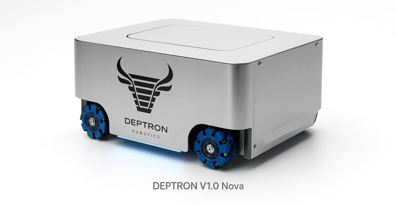

Geleceğin Depo Asistanı: Nova V1 ile Tanışın
Depo lojistiğinde manuel iş gücünden kaynaklanan zaman kayıplarını ve güvenlik risklerini minimize etmek için tasarlanan Nova V1, endüstriyel standartlarda otonom bir devrim sunuyor.
Neden Nova V1?
Deptron Robotics olarak geliştirdiğimiz Nova serisi, sadece yük taşıyan bir makine değil, deponuzun zekasıdır. Geleneksel forklift ve manuel taşıma yöntemlerinin aksine, Nova V1 tamamen otonom çalışarak operasyonel hataları sıfıra indirmeyi hedefler.
Teknik Üstünlükler
- Yüksek Taşıma Kapasitesi: Modüler yapısı sayesinde 0'dan 1.500 kg'a kadar yük taşıma kapasitesi sunarak ağır sanayi koşullarına uyum sağlar.
- Sesli Asistan Desteği: Rakiplerinden ayrışan en büyük özelliği, entegre sesli asistanıdır. Operatörler robotla doğrudan konuşarak görev atayabilir ve durum sorgulayabilir.
- Mecanum Tekerlek Teknolojisi: Dar koridorlarda bile olduğu yerde dönebilme ve yengeç yürüyüşü yapabilme kabiliyeti ile maksimum manevra alanı sağlar.
- ROS 2 & SLAM: Gelişmiş Lidar sensörleri ve SLAM algoritmaları ile GPS sinyali olmayan kapalı alanlarda santimetre hassasiyetinde haritalama yapar.
İşletmenize Katkıları
Nova V1'in entegrasyonu ile tesisinizde %35'e varan verimlilik artışı sağlanır. İş kazaları ve güvenlik riskleri minimize edilirken, ERP/WMS sistemleri ile tam entegre çalışarak stok takibini anlık hale getirir.
"Yerli üretim gücü ve küresel teknoloji vizyonuyla geliştirilen Nova, depo maliyetlerini düşürürken operasyonel hızı artırıyor."
Siz de deponuzu geleceğe hazırlamak ve Nova V1'i tesisinizde test etmek için bizimle iletişime geçebilirsiniz.